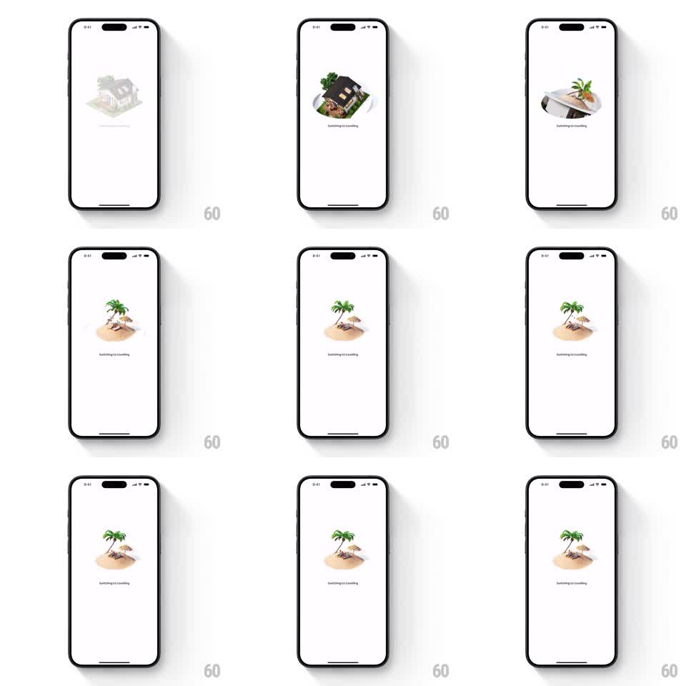

Media
Frame-by-frame

Rebuild this animation 1:1: Airbnb's mode-switch interstitial - a 3D house illustration spins and sinks into a circular hole in the page, then a beach island rises in its place.

Rebuild this animation 1:1: Airbnb's mode-switch interstitial - a 3D house illustration spins and sinks into a circular hole in the page, then a beach island rises in its place. ## Integration Integration: stack-agnostic spec - springs given as stiffness/damping, timed motions as duration + curve; map every value to your framework and animation library of choice. ## Scene Plain white screen. Center: a small isometric 3D diorama - first a house, then a beach island with palm trees. Between them, a circular hole opens in the white surface. A caption below reads "Switching to traveling". ## Motion spec Pattern: spin-sink swap diorama. - The current diorama (house) spins 360 degrees around its vertical axis (700ms, ease-in) while shrinking, then drops into a circular hole that opens beneath it - the hole's rim curls like paper (scale 0 to 1, 250ms) with a soft inner shadow. - The house sinks fully below the surface (translateY +60px, scale to 0.3, 350ms, ease-in) and the hole flashes closed. - The hole reopens and the new diorama (beach island) rises from below (translateY -60px to 0, scale 0.3 to 1, spring ~300/22 with gentle overshoot), spinning the last 120 degrees into place. - The hole seals under the island, leaving its soft drop shadow; the caption "Switching to traveling" crossfades in sync with the swap (300ms). - Total sequence ~1.8s, then the destination screen fades up. ## Calibration - Sink and rise share one hole - it never closes fully between them, just pulses. - Spin direction matches between sink and rise (both clockwise) for continuity. ## Reduced motion Dioramas crossfade without spin or hole. ## Don't miss - The hole is a real circular mask with a curled rim and shadow - a plain scale-down loses the "into the page" depth. - The island bobs once on landing (translateY +-3px, 400ms) like it floated up.